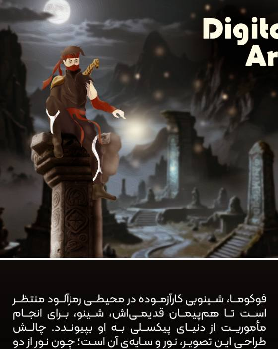
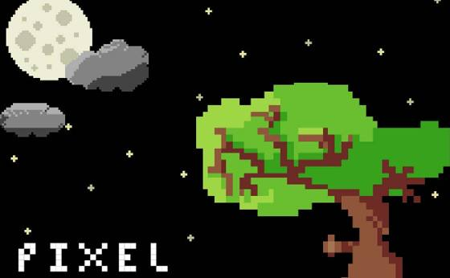
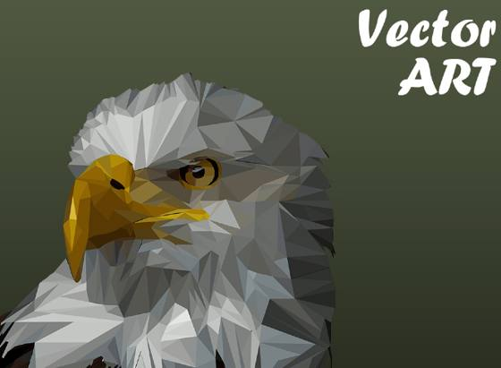
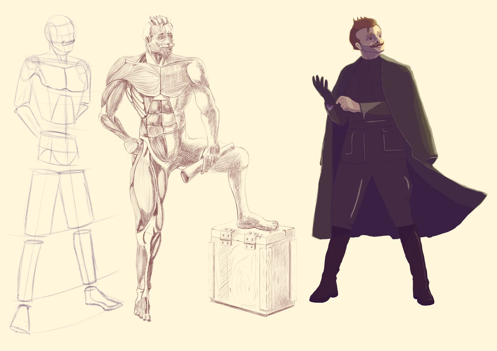

Iman Mostalipour
Self-taught visual artist working across pixel art, digital painting, vector illustration and 3D — and the developer of ChiaroPixel, a Blender add-on that bakes 3D scenes into game-ready pixel-art sprites. I am looking for the next step in two directions at once: junior art roles in games and animation, and undergraduate studies in Animation / Game Art — and I am seeking scholarship support to make the degree possible.
Selected Work

Environmental Concept
Character storytelling in a misty, atmospheric world — light and fog used to build depth and mystery.

Classic Pixel Environment
Hand-placed pixels, limited palette, manual shading — terrain, grass and stone built pixel by pixel.

Polygonal Animal Vector
Clean geometry and a restrained palette — illustration suited to logos and visual identity.

Product Modeling in Blender
Symmetric hard-surface modeling with studio lighting and realistic materials.

Figure & Anatomy Studies
Mannequin construction and écorché anatomy carried through to a fully rendered character.
Tools, built — not just used
ChiaroPixel is a studio-grade Blender add-on (Python, GPL-3.0) that turns 3D characters and props into crisp 2D pixel-art sprite sheets — with camera-space normal maps, specular and emission masks, perceptual OKLab palettes, and ready-to-use Godot 4 resources. It combines my photography background (chiaroscuro lighting, EV-calibrated three-point ratios) with game-art production.
Read about ChiaroPixel →What I am looking for
I hold a diploma in Photographics from برهان Vocational School (Tehran) — an interdisciplinary programme spanning image-making, print and digital output. Instead of entering university immediately, I spent the following years teaching myself, project by project. I now want formal training in Animation or Game Art at undergraduate level, and I am applying for scholarships that reward portfolio merit — while also being available for junior art work in games and animation. This site is my portfolio; every piece is a deliberate study of one technique, and together they show the direction I want to grow: a personal style grounded in strong fundamentals.
Contact
📧 mastalipour81@gmail.com
💻 GitHub: github.com/hakhaam-m